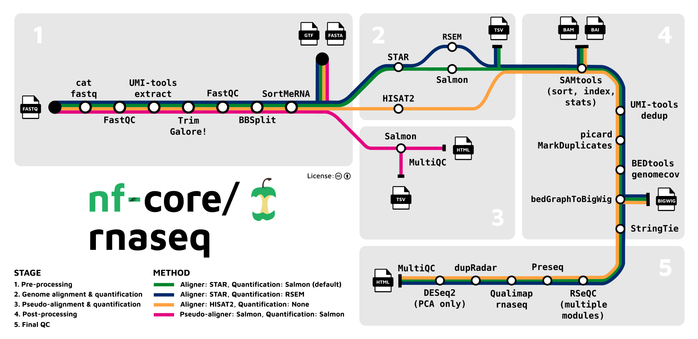

In the previous session we went through an RNA-Seq analysis pipeline, covering pre-processing, QC, alignment to a reference genome, and transcript quantification. At the end of the session we pulled all of the commands together into a script called pipeline.sh, which allows you to run the analysis using a single command.
In this session we will explore nextflow, a dedicated workflow management system, which provides a wide range of useful features that would require additional effort to implement using shell scripts. These include:
How could you achieve re-entrancy using scripts? What are the potential challenges and risks of doing this?
nextflow provides a high level domain specific language (DSL), built on top of the programming language groovy, which allows you to specify workflows using an intuitive, high level syntax that abstracts away much of the low level plumbing that you would have to take care of using scripts. There are actually two versions of the nextflow DSL, which work slightly different. Modern nextflow pipelines use the new version, referred to as DSL2. Pipelines written using nextflow are executed using the nextflow workflow engine, which orchestrates and runs the pipeline steps.
nextflow uses the dataflow programming paradigm, in which individual steps (referred to as processes) are connected to each other using channels, and data flows between the processes through the channels. This is a powerful concept, and is used in a number of other contexts, for example:
In this section we will demonstrate how to install nextflow, and how to build and run a simple nextflow workflow.
nextflow can be installed on any POSIX compatible system, such as Linux or Mac OS, or on Windows using WSL. Nextflow is already installed on the WCB servers, but if you would like to install it on another system nextflow provides a command line installer, which can be run using the following command:
$ curl -fsSL get.nextflow.io | bashNote: You will need a recent version of Java to be installed on your system before running this command.
Alternatively, if you have conda installed you can also use it to install nextflow along with its dependencies into a conda environment.
A detailed guide on how to install and get started with nextflow can be found here.
In this section we will look at a toy nextflow pipeline that illustrates some of the basic concepts of nextflow, in particular how the processes and channels that make up the workflow are specified, how parameters are handled, and how to run the pipeline and understand the output.
The following script, which I’ve called simple-pipeline.nf takes a collection of input files, each with the prefix input_, and performs two steps:
#!/usr/bin/env nextflow
// We need to specify that we're using DSL2 here
nextflow.enable.dsl=2
// These are the default values for the parameters, which can be accessed from inside the
// process blocks. Globs can be used in these definitions to specify multiple files.
params.in = "*.txt"
params.publishDir = "results"
/*
* The following process blocks define the pipeline steps
*/
// Capitalise the text in the input file
process CAPITALISE {
// This directive tells nextflow to publish the files generated by this process that match the
// specified pattern to params.publishDir.
// It also contains a 'saveAs' parameter, which uses the groovy replaceAll method to perform a
// regex substitution on the output file names. This can be useful to avoid name conflicts.
publishDir (
path: "${params.publishDir}",
pattern: "*.caps.txt",
saveAs: { filename -> filename.replaceAll(/.txt.caps.txt$/, ".caps.txt") },
mode: 'copy'
)
// This is where tell nextflow the type if data that we expect in the input channel, and
// which name we want to use for it
input:
path x
// This tells nextflow that we only want to put paths whose names match the glob "*.caps.txt"
// into the output channel
output:
path "*.caps.txt"
// This is the shell block, where we put the actual command to run.
// When we use a shell directive we can use both nextflow parameters and shell variables.
// nextflow parameters are specified using the !{x} syntax, and shell variables (not used here)
// would use $x.
shell:
"""
cat !{x} | tr '[:lower:]' '[:upper:]' > !{x}.caps.txt
"""
}
// Reverse the text in the input file
process REVERSE {
publishDir (
path: "${params.publishDir}",
pattern: "*.rev.txt",
saveAs: {
filename -> filename.replaceAll(/.txt.caps.txt.rev.txt$/, ".caps.rev.txt")
},
mode: 'copy'
)
input:
path x
output:
path "*.rev.txt"
shell:
"""
cat !{x} | rev > !{x}.rev.txt
"""
}
/*
* The following workflow block defines how to link the processes together with channels
*/
workflow {
// first we define a channel called input_ch
input_ch = Channel.fromPath(params.in)
// then we define a channel called caps_ch as the output channel of the CAPITALISE process,
// with input_ch its input channel
caps_ch = CAPITALISE(input_ch)
// then we call the REVERSE process, with caps_ch as its input channel
REVERSE(caps_ch)
}
Replace REVERSE(caps_ch) with REVERSE(input_ch) in the workflow block, and update saveAs in the publishDir directive for the REVERSE process.
You can run a nextflow script using the nextflow run command:
[USERNAME]@bifx-core3:~/RNA-seq_workshop$ mkdir nextflow_example; cd nextflow_example
[USERNAME]@bifx-core3:~/RNA-seq_workshop/nextflow_example$ echo one > one.txt
[USERNAME]@bifx-core3:~/RNA-seq_workshop/nextflow_example$ echo two > two.txt
[USERNAME]@bifx-core3:~/RNA-seq_workshop/nextflow_example$ cat >> simple-pipeline.nf
<paste the pipeline code shown above here, then type Ctrl+D>
[USERNAME]@bifx-core3:~/RNA-seq_workshop/nextflow_example$ nextflow run simple-pipeline.nf
N E X T F L O W ~ version 21.10.6
Launching `simple-pipeline.nf` [jovial_gates] - revision: 601a9c8121
executor > local (4)
[0a/bac795] process > CAPITALISE (2) [100%] 2 of 2 ✔
[f5/620bae] process > REVERSE (2) [100%] 2 of 2 ✔
[USERNAME]@bifx-core3:~/RNA-seq_workshop/nextflow_example$ head results/*
==> results/one.caps.txt <==
ONE
==> results/one.caps.rev.txt <==
ENO
==> results/two.caps.txt <==
TWO
==> results/two.caps.rev.txt <==
OWT
[USERNAME]@bifx-core3:~/RNA-seq_workshop/nextflow_example$
You can also override the default parameters using command line options with the names of the parameters, as follows:
[USERNAME]@bifx-core3:~/RNA-seq_workshop/nextflow_example$ rm -r ./results
[USERNAME]@bifx-core3:~/RNA-seq_workshop/nextflow_example$ nextflow run simple-pipeline.nf --in one.txt
N E X T F L O W ~ version 21.10.6
Launching `simple-pipeline.nf` [awesome_meitner] - revision: 601a9c8121
executor > local (2)
[ee/1526ca] process > CAPITALISE (1) [100%] 1 of 1 ✔
[57/22dbd1] process > REVERSE (1) [100%] 1 of 1 ✔
[USERNAME]@bifx-core3:~/RNA-seq_workshop/nextflow_example$ head results/*
==> results/one.caps.txt <==
ONE
==> results/one.caps.rev.txt <==
ENO
[USERNAME]@bifx-core3:~/RNA-seq_workshop/nextflow_example$In the above example the default value for params.in, “*.txt”, was replaced by “one.txt”, causing only that input file to be processed.
One of the most useful features of workflow tools such as nextflow is re-entrancy, which allows you to resume an incomplete pipeline rather than having to re-run it from scratch. nextflow allows you to do this using the -resume flag. In the following example I will modify simple-pipeline.nf to create a broken pipeline in which the REVERSE process fails. Running this workflow will result in incomplete output. I will then fix the broken pipeline, and use the -resume flag to resume it without re-running the CAPITALISE process:
[USERNAME]@bifx-core3:~/RNA-seq_workshop/nextflow_example$ sed 's/ rev / broken_rev /' simple-pipeline.nf > broken-pipeline.nf # this effectively breaks the rev command, resulting in a pipeline that will fail
[USERNAME]@bifx-core3:~/RNA-seq_workshop/nextflow_example$ nextflow run broken-pipeline.nf
N E X T F L O W ~ version 21.10.6
Launching `broken-pipeline.nf` [determined_miescher] - revision: 01340331bc
executor > local (4)
[f3/db9f35] process > CAPITALISE (2) [100%] 2 of 2 ✔
[f1/c46e02] process > REVERSE (2) [ 0%] 0 of 2
executor > local (4)
[f3/db9f35] process > CAPITALISE (2) [100%] 2 of 2 ✔
[f1/c46e02] process > REVERSE (2) [100%] 1 of 1, failed: 1
Error executing process > 'REVERSE (1)'
Caused by:
Process `REVERSE (1)` terminated with an error exit status (127)
Command executed:
cat two.txt.caps.txt | broken_rev > two.txt.caps.txt.rev.txt
Command exit status:
127
Command output:
(empty)
Command error:
.command.sh: line 2: broken_rev: command not found
Work dir:
work/5e/7807d71da3f91caca9699667291c84
Tip: you can try to figure out whats wrong by changing to the process work dir and showing the script file named `.command.sh`
[USERNAME]@bifx-core3:~/RNA-seq_workshop/nextflow_example$ sed --in-place 's/ broken_rev / rev /' broken-pipeline.nf # this fixes the rev command in broken-pipeline.nf
[USERNAME]@bifx-core3:~/RNA-seq_workshop/nextflow_example$ nextflow run broken-pipeline.nf -resume
N E X T F L O W ~ version 21.10.6
Launching `broken-pipeline.nf` [soggy_shaw] - revision: 601a9c8121
executor > local (2)
[f3/db9f35] process > CAPITALISE (1) [100%] 2 of 2, cached: 2 ✔
[e5/5494dc] process > REVERSE (1) [100%] 2 of 2 ✔
[USERNAME]@bifx-core3:~/RNA-seq_workshop/nextflow_example$ rm broken-pipeline.nf
[USERNAME]@bifx-core3:~/RNA-seq_workshop/nextflow_example$ In the above, example, fixing the pipeline and specifying the -resume flag resulted in the pipeline using the existing outputs of the CAPITALISE process cached in the work directory, as indicated by cached: 2 in the output log.
Now that we have run our nextflow pipeline, we can view the results using the tree command.
[USERNAME]@bifx-core3:~/RNA-seq_workshop/nextflow_example$ tree -a
.
├── .nextflow
│ ├── cache
│ │ └── 4be8d787-a695-4ad3-81a2-031be0e01dd2
│ │ ├── db
│ │ │ ├── 000005.sst
│ │ │ ├── 000010.log
│ │ │ ├── CURRENT
│ │ │ ├── LOCK
│ │ │ └── MANIFEST-000009
│ │ └── index.soggy_shaw
│ ├── history
│ ├── .nextflow
│ └── plr
├── .nextflow.log
├── one.txt
├── results
│ ├── one.caps.rev.txt
│ ├── one.caps.txt
│ ├── two.caps.rev.txt
│ └── two.caps.txt
├── simple-pipeline.nf
├── two.txt
└── work
├── 11
│ └── 10334377a00b5c93e955a0ea18df6f
│ ├── .command.begin
│ ├── .command.err
│ ├── .command.log
│ ├── .command.out
│ ├── .command.run
│ ├── .command.sh
│ ├── .exitcode
│ ├── one.txt -> ../../../one.txt
│ └── one.txt.caps.txt
├── 58
│ └── 1280a821d821576e6fa3ff699feefb
│ ├── .command.begin
│ ├── .command.err
│ ├── .command.log
│ ├── .command.out
│ ├── .command.run
│ ├── .command.sh
│ ├── .exitcode
│ ├── one.txt.caps.txt -> ../../11/10334377a00b5c93e955a0ea18df6f/one.txt.caps.txt
│ └── one.txt.caps.txt.rev.txt
├── 9e
│ └── b7c925ff9caa0b1b0f274b2683e1e3
│ ├── .command.begin
│ ├── .command.err
│ ├── .command.log
│ ├── .command.out
│ ├── .command.run
│ ├── .command.sh
│ ├── .exitcode
│ ├── two.txt -> ../../../two.txt
│ └── two.txt.caps.txt
└── ce
└── 3449bf6fc1bb467fba1284916f4f9d
├── .command.begin
├── .command.err
├── .command.log
├── .command.out
├── .command.run
├── .command.sh
├── .exitcode
├── two.txt.caps.txt -> ../../9e/b7c925ff9caa0b1b0f274b2683e1e3/two.txt.caps.txt
└── two.txt.caps.txt.rev.txtIn the above output we can see the following:
By creating a specialised directory for each process, nextflow isolates the outputs of the different processes, and reduces the risk of name conflicts. Each process directory within the work directory includes the following:
Many of these files can be useful for debugging broken scripts. The presence of the work directory is also useful for tidying up, since if the required results have been published to an output directory (using mode: ‘copy’ in the publishDir directive), it can be deleted to save space.
There are a few ways to do this. You could list the commands that were run in each directory as follows:
[USERNAME]@bifx-core3:~/RNA-seq_workshop/nextflow_example$ find work -name .command.sh -exec bash -c "echo {}': '; cat {}" \; You could also use nextflow log, specifying the name of the run:
[USERNAME]@bifx-core3:~/RNA-seq_workshop/nextflow_example$ nextflow log soggy_shaw -f process,workdirNextflow is a complex and feature rich workflow language, and we have only provided a brief introduction here. For a more in depth introduction to nextflow, see this course. To see an example of a simple but more realistic RNA-Seq pipeline, look at the docs here.
One of the easiest ways to perform an NGS analysis is to use a pre-existing pipeline. A good example of a high quality, flexible, and well maintained pre-built nextflow pipeline for RNA-Seq analysis is provided by nf-core.
This pipeline can be configured to run a wide range of tools, including many of those we used in the previous session. The range of possible workflows that the nf-core pipeline covers is shown in the following image, taken from the nf-core pipeline documentation:

We can view the help text for the nf-core RNA-Seq pipeline as follows:
$ nextflow run -r 3.8.1 nf-core/rnaseq --help
N E X T F L O W ~ version 21.10.6
Launching `nf-core/rnaseq` [special_babbage] - revision: 89bf536ce4 [3.8.1]
------------------------------------------------------
,--./,-.
___ __ __ __ ___ /,-._.--~'
|\ | |__ __ / ` / \ |__) |__ } {
| \| | \__, \__/ | \ |___ \`-._,-`-,
`._,._,'
nf-core/rnaseq v3.8.1
------------------------------------------------------
Typical pipeline command:
nextflow run nf-core/rnaseq --input samplesheet.csv --outdir <OUTDIR> --genome GRCh37 -profile docker
Input/output options
--input [string] Path to comma-separated file containing information about the samples in the experiment.
--outdir [string] The output directory where the results will be saved. You have to use absolute paths to storage on Cloud
infrastructure.
--email [string] Email address for completion summary.
--multiqc_title [string] MultiQC report title. Printed as page header, used for filename if not otherwise specified.
--save_merged_fastq [boolean] Save FastQ files after merging re-sequenced libraries in the results directory.
...The help text tells us that we need to create a samplesheet in csv format. Full instructions on how to build a samplesheet are provided here. The samplesheet for the example analysis that we are using looks like this:
sample,fastq_1,fastq_2,strandedness
Control_1,Control_1.fq.gz,,reverse
Control_2,Control_2.fq.gz,,reverse
Control_3,Control_3.fq.gz,,reverse
MOV10_OE_1,MOV10_OE_1.fq.gz,,reverse
MOV10_OE_2,MOV10_OE_2.fq.gz,,reverse
MOV10_OE_3,MOV10_OE_3.fq.gz,,reverseIn order to run the nf-core RNA-Seq workflow, we need to specify the following:
As an example, we can run the pseudo-alignment steps of the pipeline, corresponding to the pink route in the image above. We will use the annotation files from the previous session.
[USERNAME]@bifx-core3:~/RNA-seq_workshop/nextflow_example$ cd ..
[USERNAME]@bifx-core3:~/RNA-seq_workshop$ mkdir nfcore_rnaseq_example; cd nfcore_rnaseq_example
[USERNAME]@bifx-core3:~/RNA-seq_workshop/nfcore_rnaseq_example$ ln -s ../annotation
[USERNAME]@bifx-core3:~/RNA-seq_workshop/nfcore_rnaseq_example$ ls ../fastq/*.fq.gz | xargs -I {} ln -s {}
[USERNAME]@bifx-core3:~/RNA-seq_workshop/nfcore_rnaseq_example$ cat >> samplesheet.csv
sample,fastq_1,fastq_2,strandedness
Control_1,Control_1.fq.gz,,reverse
Control_2,Control_2.fq.gz,,reverse
Control_3,Control_3.fq.gz,,reverse
MOV10_OE_1,MOV10_OE_1.fq.gz,,reverse
MOV10_OE_2,MOV10_OE_2.fq.gz,,reverse
MOV10_OE_3,MOV10_OE_3.fq.gz,,reverse
<Ctrl+D>
[USERNAME]@bifx-core3:~/RNA-seq_workshop/nfcore_rnaseq_example$ nextflow run -r 3.8.1 nf-core/rnaseq -profile singularity --outdir nfcore_rnaseq_pseudoalignment --input samplesheet.csv --skip_alignment --pseudo_aligner salmon --salmon_index annotation/hg38.cdna.ncrna.salmon.index/ --fasta annotation/Homo_sapiens.GRCh38.dna.primary_assembly.fa --gtf annotation/Homo_sapiens.GRCh38.106.gtf
N E X T F L O W ~ version 21.10.6
Launching `nf-core/rnaseq` [curious_mercator] - revision: 89bf536ce4 [3.8.1]
------------------------------------------------------
,--./,-.
___ __ __ __ ___ /,-._.--~'
|\ | |__ __ / ` / \ |__) |__ } {
| \| | \__, \__/ | \ |___ \`-._,-`-,
`._,._,'
nf-core/rnaseq v3.8.1
------------------------------------------------------
...
This command uses the skip_alignment parameter along with the pseudo_aligner salmon option to tell nextflow to run pseudo-alignment only. A complete guide to the available parameters for the pipeline can be found here.
As was the case for the example nextflow pipeline discussed in the previous section, the pipeline generates a work directory containing the working directories for the processes, and publishes the results of the analysis to the directory specified using the outdir parameter (in our case nfcore_rnaseq_pseudoalignment).
Once complete, you can view the output in the output directory
nfcore_rnaseq_pseudoalignment, including a
MultiQC summary of all of the tools we have run.
You can view a MultiQC report from the full size dataset here.